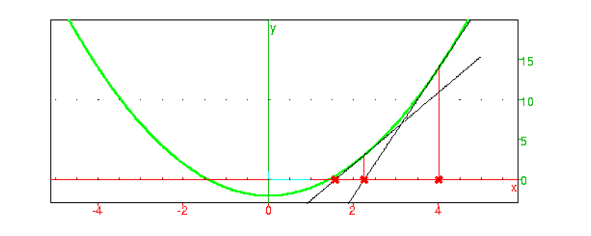
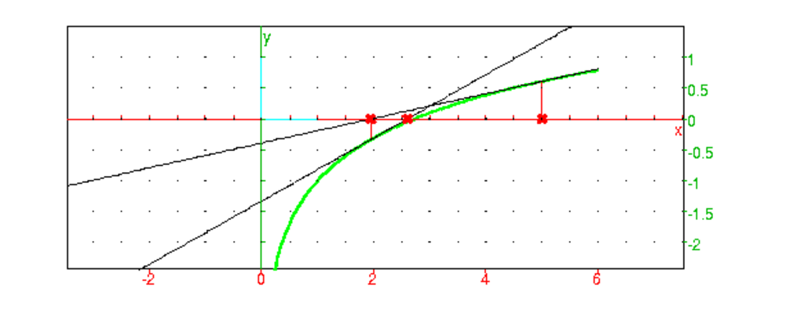

L’objectif ici est de traduire les algorithmes en l’écriture de programmes.
On écrit ici des programmes permettant d’avoir les termes d’une suite ou
d’une série et de trouver des valeurs approchées de leur limites.
Mais, pour édutier les suites et les séries, on peut aussi utiliser le
tableur ce qui est souvent plus facile que d’écrire un programme.
Soit un une suite de réels définie soit par un=f(n), soit par une relation de récurrence un=f(un−m,..,un−1) et la donnée de ses premiers termes. On veut ici, calculer les valeurs de un. Pour les fonctions qui suivent, il suffira de rajouter la fonction evalf dans le return pour avoir une valeur approchée de un : par exemple return evalf(uk).
Pour avoir le n-ième terme un il suffit :
de définir la fonction f et de taper f(n).
On peut aussi mettre f comme paramètre et taper :
u(f,n):=f(n)
Ainsi u(sq,3) vaut 9 et u(sqrt,3) vaut sqrt(3).
On remarquera qu’il est souvent préférable de simplifier
l’écriture de u(f,n) avec la commande normal : mettre plutôt
normal dans la définition de f.
Par exemple on définit :
f(x):=normal(x/sqrt(3)+sqrt(3))).
On tape :
u(f,3)
On obtient :
2*sqrt(3)
On peut aussi considérer qu’il n’y a qu’un paramètre l qui est la
séquence f,n et définir u par :
u(l):=l[0](l[1])
Pour avoir la suite des termes uk, pour k allant de k0 à n, on écrit :
utermes(f,k0,n):={
local k,lres;
lres:=NULL;
for (k:=k0;k<=n;k++){
lres:=lres,f(k);
}
return lres;
}
On a choisit de mettre tous les termes cherchés dans une séquence.
On a : lres:=NULL; initialise la séquence à vide.
Par exemple, avec la fonction :
f(x):=normal(x/sqrt(3)+sqrt(3))).
On tape :
utermes(f,0,5)
On obtient :
sqrt(3),4*sqrt(3)/3,5*sqrt(3)/3,2*sqrt(3),7*sqrt(3)/3,8*sqrt(3)/3
On va représenter une suite un par des segments verticaux : le terme
up sera représenté par le segment joignant le point (p,0) au point
(p,f(p)).
Pour faire cette représentation, on définit la fonction f et on valide le
programme suivant qui permet de représenter uj1=f(j1)..uj2=f(j2).
plotsuite(f,j1,j2):={
local j,P,L;
L:=NULL;
for (j:=j1;j<=j2;j++) {
P:=point(j+i*u(j),couleur=point_width_4+noir);
L:=L,segment(j,P,couleur=ligne_tiret+rouge),P;
}
return L;
};
Exemple
u(n):=1+(-1)^n/n
puis,
plotsuite(u,0,10)
puis,
plotsuite(u,20,30)
Pour avoir les termes u0=a,...up, on définit la fonction f puis on tape :
plotsuiterec1(f,a,p):={
local j,P,L;
L:=NULL;
a:=evalf(a);
for (j:=0;j<=p;j++) {
P:=point(j+i*a,couleur=point_width_4+noir);
L:=L,segment(j,P,couleur=ligne_tiret+rouge),P;
a:=f(a);
}
return L;
};
Exemple
f(x):=x^2-2
puis,
plotsuiterec1(f,0,10)
ou,
plotsuiterec1(sq-2,0,10)
Pour avoir les termes u0=la[0],u1=la[1],...up, on définit la fonction f puis on tape :
plotsuiterec(f,la,p):={
local j,P,L,s,a;
L:=NULL;
s:=size(la);
la:=evalf(la);
for (j:=0;j<s;j++) {
P:=point(j+i*la[j],couleur=point_width_4+noir);
L:=L,segment(j,P,couleur=ligne_tiret+rouge),P;
}
for (j:=s;j<=p;j++) {
a:=f(op(la));
P:=point(j+i*a,couleur=point_width_4+noir);
L:=L,segment(j,P,couleur=ligne_tiret+rouge),P;
la:=append(tail(la),a);
}
return L;
};
Exemple
f(x,y):=x+y
puis,
plotsuiterec(f,[0,1],6)
Cette session se trouve dans plottoile.xws.
On rappelle que la commande plotseq(f(x),a,p) permet de visualiser les
p premiers termes de la suite récurrente u0=a, un=f(un−1) si
n>0 en visualisant "l’escargot".
On se propose de réécrire cette commande de façon a bien mettre en evidence
la construction des différents termes de la suite.
À la différence de plotseq la fonction plottoile a comme
premier argument la fonction f et non l’expression f(x).
On représente le premier terme u0 par une croix noire sur l’axe des x
d’abscisse le deuxième argument. Pour avoir u1, on trace le segment
vertical allant de la croix au graphe de f(x), puis le segment horizontal
allant, du point du graphe de f(x) au graphe de la première bissectrice
(pour reporter la valeur de f(u0) sur l’axe des x),
puis, un segment vertical en pointillés allant, du graphe de la première
bissectrice à l’axe des x pour tracer une croix rouge.
Pour avoir les termes suivants, on trace
ensuite un segment vertical allant du point du graphe de la première
bissectrice, au graphe de f(x), puis le segment horizontal allant, du point
du graphe de f(x) au graphe de la première bissectrice, puis, un segment
vertical jusqu’à l’axe des x pour tracer une croix rouge etc...
On s’arrête lorsque l’on a dessiné p croix rouges, p etant le
troisième argument.
On tape :
plottoile(f,u,n):={
local j,v,L,P;
u:=evalf(u);
P:=point(u,couleur=point_width_4+noir);
if (n<=0 ) {return P;}
v:=f(u);
L:=segment(u,u+i*v,couleur=rouge),P;
L:=L,segment(u+i*v,v+i*v,couleur=rouge);
u:=v;
v:=f(u);
P:=point(u,couleur=point_width_4+rouge);
L:=L,segment(u,u+i*u,couleur=ligne_tiret+rouge),P;
for (j:=2;j<=n;j++) {
L:=L,segment(u+i*u,u+i*v,couleur=rouge);
L:=L,segment(u+i*v,v+i*v,couleur=rouge);
u:=v;
v:=f(u);
P:=point(u,couleur=point_width_4+rouge);
L:=L,segment(u,u+i*u,couleur=ligne_tiret+rouge),P;}
return plotfunc(f(x),x,couleur=vert),plotfunc(x,x,couleur=bleu),L;
};
Par exemple pour voir les premiers termes de :
u0=2, si n ≥ 1, un=cos(un−1), on tape :
plottoile(cos,2,5)
On peut aussi noter les indices des termes de la suite pour la croix
représentant uj en rajoutant legende(u,j,quadrant4).
plottoilegende(f,u,n):={
local j,v,L,P;
u:=evalf(u);
P:=point(u,couleur=point_width_4+noir),legende(u,0,quadrant4);
if (n<=0 ) {return P;}
v:=f(u);
L:=segment(u,u+i*v,couleur=rouge),P;
L:=L,segment(u+i*v,v+i*v,couleur=rouge);
u:=v;
v:=f(u);
P:=point(u,couleur=point_width_4+rouge),legende(u,1,quadrant4);
L:=L,segment(u,u+i*u,couleur=ligne_tiret+rouge),P;
for (j:=2;j<=n;j++) {
L:=L,segment(u+i*u,u+i*v,couleur=rouge);
L:=L,segment(u+i*v,v+i*v,couleur=rouge);
u:=v;
v:=f(u);
P:=point(u,couleur=point_width_4+rouge),legende(u,j,quadrant4);
L:=L,segment(u,u+i*u,couleur=ligne_tiret+rouge),P;}
return plotfunc(f(x),x,couleur=vert),plotfunc(x,x,couleur=bleu),L;
};
Par exemple pour voir les premiers termes avec leur indice de :
u0=2, si n ≥ 1, un=cos(un−1), on tape :
plottoilegende(cos,2,5)
On peut aussi faire une animation qui montrera la progression de la
construction. Pour cela on modifie la fonction plottoile en toile
pour avoir dans LT, la progression du tracé. On remarquera que l’on met
entre crochet les objets graphiques qui seront affichés simultanément lors
de l’animation.
On tape :
toile(f,u,n):={
local j,v,L,P,LT;
u:=evalf(u);
P:=point(u,couleur=point_width_4+noir);
v:=f(u);
LT:=P;
L:=segment(u,u+i*v,couleur=rouge);
L:=L,segment(u+i*v,v+i*v,couleur=rouge);
u:=v;
v:=f(u);
P:=point(u,couleur=point_width_4+rouge);
L:=L,segment(u,u+i*u,couleur=ligne_tiret+rouge),P;
LT:=LT,[LT,L];
for (j:=2;j<=n;j++) {
L:=L,segment(u+i*u,u+i*v,couleur=rouge);
L:=L,segment(u+i*v,v+i*v,couleur=rouge);
u:=v;
v:=f(u);
P:=point(u,couleur=point_width_4+rouge);
L:=L,segment(u,u+i*u,couleur=ligne_tiret+rouge),P;
LT:=LT,[LT,L];
}
return LT;
};
Puis on anime la liste LT renvoyée par toile.
animtoile(f,u,n):={
local LT;
LT:=toile(f,u,n);
return plotfunc(f(x),x,couleur=vert),
plotfunc(x,x,couleur=bleu),
animation(LT);
};
Par exemple pour voir en animation les premiers termes de :
u0=2, si n ≥ 1, un=cos(un−1), on tape :
animtoile(cos,2,5)
On peut régler la vitesse d’animation avec Menu ->Animation (situé
dans le pavé de boutons à droite de la fenêtre graphique).
On peut arrêter l’animation avec le bouton ▸| (à
gauche de Menu) : il suffit alors, de cliquer dans la
fenêtre graphique, pour que l’animation se déroule au pas à pas.
Commençons par un exemple : la suite de Fibonnacci définie par :
u0=a
u1=b
un=un−1+un−2 pour n ≥ 2
On écrit pour avoir un:
fibon(a,b,n):={
local k,uk;
for (k:=2;k<=n;k++) {
uk:=a+b;
a:=b;
b:=uk;
}
return uk;
}
On écrit pour avoir u0,u1...un:
fibona(a,b,n):={
local k,uk,res;
res:=a,b;
for (k:=2;k<=n;k++) {
uk:=a+b;
a:=b;
b:=uk
res:=res,uk;
}
return res;
}
On écrit pour avoir uc,uc+1...un pour c ≥ 0 :
fibonac(a,b,c,n):={
local k,uk,res;
for (k:=2;k<c;k++) {
uk:=a+b;
a:=b;
b:=uk
};
if c>1 res:=NULL else
if c==0 {res:=a,b;c:=2;} else
if c==1 {res:=b;c:=2};
for (k:=c;k<=n;k++) {
uk:=a+b;
a:=b;
b:=uk
res:=res,uk;
}
return res;
}
Remarque On peut bien sûr écrire un programme récursif qui donne la valeur de un. Mais cela n’est pas efficace car on calcule plusieurs fois le même terme. Car par exemple pour calculer u5 on doit calculer u3 et u4 et pour calculer u4, il faudra à nouveau calculer u3 et u2, donc u3 sera calculé 2 fois et u2 sera calculé 3 fois. Pour s’en rendre compte on peut imprimer les valeurs des variables pour chacun des appels récursifs.
On a :
u0=u0
u1=u1
un=un−1+un−2 pour n ≥ 2
Donc
fibonr(u0,u1,n):={
if (n==0) {print(u0,u1,n);return u0;}
if (n==1) {print(u0,u1,n)return u1;}
print(u0,u1,n)
return fibonr(u0,u1,n-2)+fibonr(u0,u1,n-1);
}:;
On peut aussi compter le nombre de fois que la fonction a èté appelée c’est à dire le nombre de print du programme fibonr précédent:
fibona(u0,u1,n):={
if (n==0) {return [u0,1];}
if (n==1) {return [u1,1];}
print(u0,u1,n)
return fibona(u0,u1,n-2)+fibona(u0,u1,n-1)+[0,1];
}
On tape : fibona(1,1,6)
On obtient : [13,25]
On a :
1 appel avec n=6,
1 appel avec n=5,
2 appels avec n=4,
3 appels avec n=3,
5 appels avec n=2,
8 appels avec n=1,
5 appels avec n=0,
On remarque que le nombre d’appels est une suite de Fibonacci et on voit que
pour calculer un on doit calculer u2 fibon(1,1,n-2 fois !
On suppose maintenant que la suite est définie par une relation de
récurrence definie par une fonction f de m variables :
pour définir la suite on se donne les m premiers termes :
u0,u1,..,um−1 et la relation :
un=f(un−m,un−m+1,..,un−1) pour n≥ m.
On veut calculer un, et on suppose que les valeurs de
u0,u1,..,um−1 sont dans la liste l0.
On écrit :
urec(f,n,l0):={
local s,k,uk;
s:=size(l0);
l0:=op(l0);
for (k:=s;k<=n;k++) {
uk:=f(l0);
l0:=tail(l0),uk;
}
return uk;
}
On utilise op au début, pour transformer la liste l0 en une
séquence et tail(l0) pour enlever le premier élément et ainsi
l0:=tail(l0),uk est une séquence qui a toujours s éléments.
On peut aussi considérer que le paramètre l contient toutes les
variables à savoir l=f,n,u0,..,um−1 . On écrit mais c’est
inutilement compliqué (!) :
urecs(l):={
local f,n,s,k,uk;
f:=l[0];
n:=l[1];
l:=tail(tail(l));
s:=size(l);
//f est une fonction de s variables
for (k:=s;k<=n;k++) {
uk:=f(l);
l:=tail(l),uk;
}
return uk;
}
Pour avoir tous les termes uk de la suite pour k allant de 0 à n,
On considère que le paramètre l contient toutes les
variables à savoir l=f,n,u0,..,um−1.
On écrit :
urec_termes(l):={
local f,n,s,k,uk,lres;
f:=l[0];
n:=l[2];
l:=tail(tail(tail(l)));
s:=size(l);
//f est une fonction de s variables
lres:=l;
for (k:=s;k<=n;k++) {
uk:=f(l);
lres:=lres,uk;
l:=tail(l),uk;
}
return lres;
}
Par exemple on définit :
f(x,y):=normal(x+y)
On tape :
urec_termes(f,5,1,1)
On obtient la suite de Fibonacci :
1,1,2,3,5,8
On tape :
urec_termes(f,5,1,(sqrt(5)+1)/2)
On obtient :
1,(sqrt(5)+1)/2,(sqrt(5)+3)/2,sqrt(5)+2,
(3*sqrt(5)+7)/2,(5*sqrt(5)+11)/2
On tape, pour vérifier que l’on a obtenu la suite géométrique de raison
(sqrt(5)+1)/2 :
seq(normal(((sqrt(5)+1)/2)^k),k=0..5)
On obtient :
1,(sqrt(5)+1)/2,(sqrt(5)+3)/2,sqrt(5)+2,
(3*sqrt(5)+7)/2,(5*sqrt(5)+11)/2
Pour avoir tous les termes uk de la suite pour k allant de k0 à n,
On considère que le paramètre l contient toutes les
variables à savoir l=f,k0,n,u0,..,um−1.
On écrit :
urec_termekn(l):={
local f,n,s,k,uk,k0,lres;
f:=l[0];
k0:=l[1];
n:=l[2];
l:=tail(tail(tail(l)));
s:=size(l);
//f est une fonction de s variables
for (k:=s;k<k0;k++) {
uk:=f(l);
l:=tail(l),uk;
};
if k0>1 res:=NULL else
if k0==0 {res:=a,b;k0:=2;} else
if k0==1 {res:=b;k0:=2};
for (k:=k0;k<=n;k++) {
uk:=f(l);
lres:=lres,uk;
l:=tail(l),uk;
}
return lres;
}
Par exemple on définit :
f(x,y):=normal(x+y)
On tape :
urec_termekn(f,5,10,1,1)
On obtient la suite de Fibonacci :
8,13,21,34,55,89
On tape :
urec_termes(f,5,9,1,(sqrt(5)+1)/2)
On obtient :
5*sqrt(5)+11)/2,4*sqrt(5)+9,(13*sqrt(5)+29)/2,
(21*sqrt(5)+47)/2,17*sqrt(5)+38
Soit un une suite de réels telle que la série ∑k=0∞uk converge vers S. On veut ici, calculer une valeur appochée de cette somme. Si la série converge rapidement, il suffit de calculer ∑k=0n uk pour n assez grand, sinon il faut procéder à une accélération de convergence, en construisant une série de même somme et convergeant plus rapidement.
On écrit :
sum_serie(f,n0,n):={
local s,k;
//un=f(n) ou f est une fonction de 1 variable
s:=0;
for (k:=n0;k<=n;k++) {
s:=s+evalf(f(k));
}
return s;
}
Il est plus précis de faire le calcul de la somme en commençant par les plus petits termes, on écrit :
serie_sum(f,n0,n):={
local s,k;
//un=f(n) ou f est une fonction de 1 variable
s:=0;
for (k:=n;k>=n0;k--) {
s:=s+evalf(f(k));
}
return s;
}
On peut avoir aussi besoin de la suite des sommes partielles : par exemple
pour les séries alternées deux sommes partielles successives encadrent
la somme de la série.
On écrit en utilisant un paramètre supplémentaire alt pour
repérer les séries alternées de la forme un=altn*f(n) :
sums_serie(f,n0,n,alt):={
local ls,s,k;
//un=(alt)^n*f(n) ou f est une fonction de 1 variable
s:=0;
ls:=[];
if (alt<0){
if (irem(n0,2)==0) {alt:=-alt;}
for (k:=n0;k<=n;k++) {
s:=s+evalf(alt*f(k));
alt:=-alt;
ls:=concat(ls,s);
}
}
else {
for (k:=n0;k<=n;k++) {
s:=s+evalf(alt*f(k));
ls:=concat(ls,s);
}
}
return ls;
}
On va calculer la somme :
∑k=0n1/k! en commencant par les plus petits termes :
vale0(n):={
local S,k;
S:=0;
for (k:=n;k>=0;k--){
S:=S+1/k!;
}
return S;
}
:;
On tape :
SS:=vale0(22)
iquo(numer(SS)*10^22,denom(SS))
On obtient :
27182818284590452353602
On va calculer la somme :
S=∑k=0n1/k! en calculant k! au fur et à mesure dans f
vale1(n):={
local S,f,k;
f:=1;
S:=1;
for (k:=1;k<=n;k++){
f:=f*k;
S:=S+1/f;
}
return S;
}
:;
On tape :
S:=vale1(22)
iquo(numer(S)*10^22,denom(S))
On obtient :
27182818284590452353602
On va calculer la somme :
S=∑k=0n1/k! en calculant son numérateur p et son
dénominateur f à chaque étape : on a p/(k−1)!+1/k!=(p*k+1)/k!
et k!=f*k. Le résultat obtenu en cherchant le quotient de 10n*p
par f donnera les n chiffres significatils de e i.e e=vale(n)*10−n
lorsque n≥ 22 car 1./23!<4e−23
vale(n):={
local p,f,k;
f:=1;
p:=1;
for (k:=1;k<=n;k++){
f:=f*k;
p:=p*k+1;
}
return iquo(p*10^n,f);
}
:;
On tape :
vale(22)
On obtient :
27182818284590452353602
On suppose que un=f(n) et que f(n) admet un développement limité
à tous les ordres par rapport à 1/n.
On suppose que uk∼ a/kp et on pose :
vk=uk−a/(k+1)(k+2)...(k+p)
On a alors, vk=O(1/kp+1) et on connait :
∑k=0∞a/(k+1)(k+2)...(k+p)
En effet :
a/(k+1)(k+2)...(k+p)=a/p−1(1/(k+1)(k+2)...(k+p−1)−a/(k+2)(k+3)...(k+p))
donc
∑k=0∞a/(k+1)(k+2)...(k+p)=a/p−1(1/1· 2·...· (p−1))=a/(p−1)(p−1)! et,
∑k=k0∞a/(k+1)(k+2)...(k+p)=a/(p−1)(k0+1)(k0+2)..(k0+p−1)
On a :
∑k=0∞uk=a/(p−1)(p−1)!+∑k=0∞vk
On peut ensuite continuer à appliquer la même méthode à vk.
Exercice
Utiliser cette méthode pour calculer numériquement :
∑k=0∞1/(k+1)2.
On va faire "à la main" trois accélérations successives.
On pose :
uk =1/(k+1)2
On tape :
u(k):=1/(k+1)^2
On tape :
v(k):=1/((k+1)^2*(k+2))
On tape :
w(k):=2/((k+1)^2*(k+2)*(k+3))
On tape :
t(k):=6/((k+1)^2*(k+2)(k+3)(k+4))
On compare π2/6 et les valeurs obtenues pour n=200, car on sait
que :
S=∑k=0∞1/(k+1)2=π2/6≃ 1.64493406685
On tape :
serie_sum(u,0,200)
ou
evalf(sum(1/(k+1)^2,k=0..200))
On obtient S à 5*10−3 prés (1 décimale exacte) :
1.63997129788
On tape :
1+serie_sum(v,0,200)
ou
evalf(1+sum(1/((k+1)^2*(k+2)),k=0..200))
On obtient S à 1.25*10−5 prés (4 décimales exactes) :
1.64492179293
On tape :
1+1/4+serie_sum(w,0,200)
ou
evalf(1+1/4+sum(2/((k+1)^2*(k+2)*(k+3)),k=0..200))
On obtient S à 8.3*10−8 prés (5 décimales exactes) :
1.64493398626
On tape :
1+1/4+1/9+serie_sum(t,0,200)
ou
evalf(1+1/4+1/9+sum(6/((k+1)^2*(k+2)*(k+3)*(k+4)),k=0..200))
On obtient S à 9.2*10−10 prés (8 décimales exactes) :
1.64493406596
Les erreurs
Si on compare la somme ∑k=n+1∞1/(k+1)2 à une intégrale on a :
|
| < | ∫ |
|
| dx= |
|
Ou encore, on peut aussi remarquer que :
|
| < |
|
| = |
|
puisque 1/k(k+1)=1/k−1/k+1.
Au bout de la p-ième accéleration on calcule la somme de :
uk(p)=p!/(k+1)2(k+2)...(k+p+1) et on a :
|
| < |
|
|
Et puisque :
| = |
| − |
|
On a :
| un(p)= |
|
| < |
|
Donc
| un(p)< |
|
On vérifie (π2/6≃ 1.64493406685) :
1.63997129788<π2/6<1.63997129788+1/201=1.64494642226
1.64492179293<π2/6<1.64492179293+1/(2*2012)=1.64493416886
1.64493398626<π2/6<1.64493398626+2/(3*2013)=1.64493406836
1.64493406596<π2/6<1.64493406596+6/(4*2014)=1.64493406688
Le programme
On peut écrire un programme qui va demander le nombre d’accélérations
pour calculer
∑k=0∞1/(k+1)2
serie_sumacc(n,acc):={
local p,l,j,k,ls,sf,sg,gk,fact;
ls:=[];
//calcul sans acceleration
sf:=0.0;
for (k:=n;k>=0;k--) {
sf:=sf+1/(k+1)^2;
}
ls:=[sf];
sf:=0.0;
fact:=1;
for (p:=1;p<=acc;p++){
//calcul de 1+1/4+..+1/p^2, le terme a rajouter
sf:=sf+evalf(1/p^2);
//calcul de p!
fact:=fact*(p);
//calcul de sg, somme(de 0 a n) de la serie acceleree p fois
sg:=0.0;
for (k:=0;k<=n;k++) {
gk:=1/(k+1)^2;
//calcul du k-ieme terme gk de la serie acceleree p fois (sans p!)
for (j:=1;j<=p;j++) {
gk:=evalf(gk/(k+j+1));
}
sg:=sg+gk;
}
ls:=concat(ls,sf+fact*sg);
}
return(ls);
}
On suppose que uk=(−1)kf(k) avec f(k) tend vers zéro quand k tend
vers +∞ et f décroissante de ℝ+ dans ℝ+.
On pose :
g(x)=1/2(f(x)−f(x+1)) donc
vk=(−1)kf(k)−f(k+1)/2=uk+uk+1/2=(−1)k g(k)
On a :
∑k=0n vk=1/2(∑k=0n uk+∑k=0n uk+1)
donc,
∑k=0n vk=1/2(∑k=0n uk+∑k=1n+1 uk)
donc,
∑k=0n vk=u0/2+un+1/2+∑k=0n uk
Puisque f(k) tend vers zéro quand k tend vers +∞,
g(k)=1/2(f(k)−f(k+1)) tend aussi vers zéro quand k tend vers
+∞.
Si la fonction f est convexe (f″(x)>0), la série ∑k=0∞vk
vérifie aussi le théorème des séries alternées.
En effet, pour x>0 on a :
g(x)=1/2(f(x)−f(x+1)) ≥ 0 puisque f décroissante sur
ℝ+
g′(x)=1/2(f′(x)−f′(x+1)) < 0 puisque f″(x)>0, f′ est
négative et croissante sur ℝ+
donc g est décroissante de ℝ+ dans ℝ+ et
g(k) tend vers zéro quand k tend vers +∞.
Conclusion : La série ∑k=0∞vk est une série
alternée de somme S+u0/2.
Si de plus, f′(x)/f(x) tend vers zéro quand x tend vers l’infini,
la série ∑k=0∞vk converge plus rapidement que
∑k=0∞uk, puisque il existe c, x<c<x+1 d’après le th des accroissements finis tel que:
0<g(x)=1/2(f(x)−f(x+1))=−1/2f′(c)
on a donc, puisque f′ est négative et croissante:
0<g(x)<−1/2f′(x)=o(f(x)).
Utiliser cette méthode pour calculer numériquement :
∑k=0∞(−1)k/k+1.
Toutes les dérivées de f(x)=1/(x+1) ont un signe constant sur
[0;+∞[ et tendent vers zéro à l’infini, ces dérivées sont donc
monotones et on peut donc faire plusieurs accélérations successives.
On va faire "à la main " trois accélérations successives.
On pose :
uk =(−1)k/(k+1)
On tape :
u(k):=(-1)^k/(k+1)
On tape :
v(k):=(-1)^k/(2*(k+1)*(k+2))
On tape :
w(k):=(-1)^k/(2*(k+1)*(k+2)*(k+3))
On tape :
t(k):=(-1)^k*3/(4*(k+1)*(k+2)*(k+3)*(k+4))
On compare ln(2) et les valeurs obtenues pour n=200, car on sait
que :
S=∑k=0∞(−1)k1/(k+1)=ln(2)≃
0.69314718056
On tape :
serie_sum(u,0,200)
On obtient S à 5*10−3 prés (2 décimales exactes) :
0.69562855486
On tape :
1/2+serie_sum(v,0,200)
On obtient S à 1.23*10−5 prés (4 décimales exactes) :
0.693153307335
On tape :
1/2+1/8+serie_sum(w,0,200)
On obtient S à 6.1*10−8 prés (8 décimales exactes) :
0.693147210666
On tape :
1/2+1/8+1/24+serie_sum(t,0,200)
On obtient S à 4.6*10−10 prés (10 décimales exactes) :
0.693147180781
Les erreurs
Le reste d’une série alternée est du signe de son premier terme et
la valeur absolue du reste est inférieure à la valeur absolue de son
premier terme :
|∑k=n+1∞(−1)k1/(k+1)|<1/(n+2)
Au bout de la p-ième accéleration on calcule la somme de :
uk(p)=(−1)kp!/2p(k+1)(k+2)...(k+p+1) et on a :
| | |
|
| |< |
| < |
|
On vérifie (ln(2)≃ 0.69314718055995) :
0.69562855486<ln(2)<0.69562855486+1/202=0.70057904991
0.693153307335<ln(2)<0.693153307335+1/(2*2022)=0.693165561036
0.693147210666<ln(2)<0.693147210666+2/(4*2023)=0.693147271328
0.693147180781<ln(2)<0.693147180781+6/(8*2024)=0.693147181231.
On peut écrire un programme qui va demander le nombre p
d’accélérations.
Si uk(p) désigne le k-ième terme de la série accélérée
p fois, on a :
∑k=0∞(−1)k/(k+1)=∑k=0pu0(k−1)/2+∑k=0∞uk(p)
avec
uk(p)=(−1)k p!/2p(k+1)...(k+p+1)
On choisit de multiplier seulement à la fin par p!/2p et
de ne calculer que la somme des n premiers termes :
|
|
On met cette
somme dans la variable sg, pour cela on calcule
(−1)k/(k+1)...(k+p+1) que l’on met dans la variable
gk :
au début sg=0 et gk=1/(p+1)! (c’est la valeur pour k=0)
puis, on ajoute gk à la somme sg, ensuite on calcule
(−1)11!/(p+2)! que l’on met dans gk
(c’est la valeur pour k=1) etc...
La variable sf sert au début à calculer
∑k=0n (−1)k/(k+1) puis,
sf sert à calculer la somme à rajouter
∑k=0pu0(k−1)/2
(qui vaut 1/2+1/8+1/24 pour p=3 accélerations).
Dans le programme, on utilise la variable fact pour calculer
(p+1)! et la variable fact2 pour calculer p!/2p.
On écrit :
seriealt_sumacc(n,acc):={
local l,j,k,ls,sf,sg,gk,fact,fact2,alt,t0,p;
//calcul sans acceleration
sf:=0.0;
alt:=1;
for (k:=n;k>=0;k--) {
sf:=sf+alt/(k+1);
alt:=-alt;
}
if (alt==1) {
ls:=[-sf];}
else {
ls:=[sf];
}
t0:=0.5;
// sf maintenant est la somme a rajouter
sf:=0.0;
fact:=1;fact2:=1;
for (p:=1;p<=acc;p++){
sf:=sf+fact2*t0;
//calcul de p+1! et de p!/2^p
fact:=fact*(p+1);
fact2:=fact2*p/2;
//sg, somme(de k=0 a n) de la serie gk acceleree p fois
sg:=0.0;
//terme d'indice 0 (ds gk) de la serie acceleree p fois
//(sans p!/2^p=fact2)
gk:=1/fact;
//on conserve gk/2 dans t0 car il faut rajouter t0
//au prochain sf
t0:=gk/2;
sg:=sg+gk;
alt:=-1;
for (k:=1;k<=n;k++) {
gk:=1/(k+1);
//terme d'indice k (ds gk) de la serie acceleree p fois
//(sans p!/2^p=fact2)
for (j:=1;j<=p;j++) {
gk:=evalf(gk/(k+j+1));
}
sg:=sg+alt*gk;
alt:=-alt;
}
ls:=concat(ls,sf+fact2*sg);
}
return(ls);
}
On met ce programme dans un niveau éditeur de programmes (que l’on ouvre
avec Alt+p), puis on le teste et le valide avec OK et on tape
dans une ligne de commandes :
seriealt_sumacc(200,3)
On obtient :
[0.69562855486,0.693153307335,0.693147210666,0.693147180781]
On tape :
seriealt_sumacc(100,4)
On obtient :
[0.698073169409,0.693171208625,0.693147412699,
0.693147183892,0.693147180623]
On cherche une approximation de :
∑n=0∞(−1)n*u(n)=sum((-1)^n*u(n),n,0,infinity)
lorsque u(n) tend vers 0 en décroissant.
On pose :
Delta(u))(n)=u(n+1)-u(n) et
delta(u,p,n)=(Delta@@p(u))(n)
On a :
delta(u,2,n)=u(n+2)-2*u(n+1)+u(n)
delta(u,3,n)=u(n+3)-3*u(n+2)+3*u(n+1)-u(n)
delta(u,p,N)=u(n+p)-comb(p,1)*u(n+p-1)+comb(p,2)*u(n+p-2)+
....+(-1)^p*u(n)
c’est à dire :
delta(u,p,n)=sum((-1)^(p-j)*comb(p,j)*u(n+j),j,0,p)
La transformation d’Euler consiste à écrire :
sum((-1)^n*u(n),n,N,infinity)
sous la forme :
(-1)^N*sum((-1)^p*delta(u,p,N)/2^(p+1),p,0,infinity)
Pour prouver cette égalité il suffit de développer la dernière
expression et de chercher le coefficient de u(N+k) dans la somme :
∑p=0∞,(−1)p*delta(u,p,N)/2p+1
Le coefficient de u(N+k) est :
s(k)=(-1)^k*sum(comb(k+p,p)/2^(k+p+1),p,0,infinity)
et cette somme vaut (-1)^k quelque soit k entier.
En effet par récurrence :
pour k=0, comb(k+p,p)=1 et
sum(1/2^(p+1),p,0,infinity)=1/2+1/4+...1/2^n+...=1
On a de plus :
- pour p=0, comb(k+p,p)=comb(k+1+p,p)=1
- pour p>0, comb(k+p,p)=comb(k+1+p,p)-comb(k+1+p-1,p-1)
donc
s(k)=(-1)^k*sum(comb(k+1+p,p)/2^(k+p+1),p,0,infinity)-
(-1)^k*sum(comb(k+1+p-1,p-1)/2^(k+1+p-1+1),p,1,infinity)=
-2*s(k+1)-
(-1)^k*sum(comb(k+1+p,p)/2^(k+1+p+1),p,0,infinity)=
-2*s(k+1)+s(k+1)=-s(k+1).
donc si s(k)=(-1)^k alors s(k+1)=(-1)^(k+1).
La transformation d’Euler permet une accélération de convergence car
la série :
sum((-1)^p*delta(u,p,N)/2^(p+1),p,0,infinity)
converge plus rapidement.
On définit, tout d’abord, la fonction delta :
delta(u,p,n):={
local val,k,s;
val:=0;
s:=1;
for (k:=p;k>=0;k--) {
val:=val+comb(p,k)*u(n+k)*s;
s:=s*-1;
}
return val;
};
On écrit la transforpmation d’Euler :
trans_euler(u,N,M) qui approche
sum((-1)^n*u(n),n,0,infinity) et vaut :
sum((-1)^n*u(n),n,0,N-1)+
(-1)^N*sum((-1/2)^p*delta(u,p,N)/2,p,0,M).
trans_euler(u,N,M):={
local S,T,k,s;
S:=0;
s:=1;
for (k:=0;k<N;k++) {
S:=S+u(k)*s;
s:=s*-1;
}
T:=0;
s:=s*1/2;
for (k:=0;k<=M;k++) {
T:=T+delta(u,k,N)*s;
s:=s*-1/2;
};
return evalf(normal(S+T));
};
Par exemple pour u(n)=1/(n+1) avec 20 digits, on tape :
u(n):=1/(n+1);
DIGITS:=20;
trans_euler(u,10,20);
On obtient :
0.693147180559945056511
trans_euler(u,9,21);
On obtient :
0.693147180559945594072
On remarque que l’on a 16 decimales exactes car on a :
evalf(ln(2))=0.693147180559945309415
La méthode présentée dans cette section est trés largement inspirée par le texte "Sommation de séries alternées" de l’épreuve de modélisation de l’agrégation de mathématiques (session 2006).
On veut évaluer la somme S de la série alternée :
S=∑n=0∞(−1)nan
avec (an)n≥ 0 est une suite de nombres positifs qui tend vers 0 en
décroissant.
On suppose que l’on a pour n≥ 0 :
a−n=∫01xndµ
où µ est une mesure positive sur [0,1].
C’est en particulier le cas si an=A(n) avec A fonction indefiniment
dérivable pour laquelle les kième dérivées A(k) sont telles que
(−1)k*A(k)(x) soit positif pour x≥ 0 pour tout k≥ 0.
Théorème :
Soit Pn une suite de polynômes de degré n vérifiant
Pn(−1)≠ 0.
À Pn, on associe les coefficients cn,k pour 0 ≤ k<n définis
par :
Pn(−1)−Pn(x)/1+x=∑k=0n−1cn,kxk
et le coefficient dn défini par :
dn=Pn(−1)
Soient S=∑k=0∞(−1)kak
et Sn=1/dn∑k=0n−1cn,kak
Alors :
|S−Sn|≥ supx ∈ [0,1] |Pn(x)|/|dn|S
On a, en effet, avec l’hypothèse faite sur les ak :
S=∫01 1/1+xdµ et
S−Sn=∫01Pn(x)/dn(1+x)dµ
Pour calculer S il reste à choisir la suite des polynômes Pn.
On peut choisir :
^n+(3-sqrt(8))^n)/2;//n=nombres de termes et a fonction definissant a(n)
//S_n(P_n) =seriealt(n,a)
//S_n(P_n) approche sum((-1)^k*a(k),k,0,+infinity)
//avec P_n=poly de chebyshev
seriealt1(n,a):={
local k,d,c,p,S;
d:=((3+sqrt(8))^n+(3-sqrt(8))^n)/2;
p:=1;
c:=d-p;
S:=a(0)*c;
for (k:=1;k<n;k++) {
p:=p*(k+n-1)*(k-n-1)/(k-1/2)/k;
c:=-p-c;
S:=S+a(k)*c;
}
return evalf(S/d);
};
^n;//n=nombres de termes et a fonction definissant a(n)
//S_n(P_n) =seriealt(n,a)
//S_n(P_n) approche sum((-1)^k*a(k),k,0,+infinity)
//avec P_n(x)=poly (1-x)^n
seriealt2(n,a):={
local k,d,c,p,S;
d:=2^n;
p:=1;
c:=d-p;
S:=a(0)*c;
for (k:=1;k<n;k++) {
p:=p*(k-n-1)/k;
c:=-p-c;
S:=S+a(k)*c;
}
return evalf(S/d);
};
^q*2^2q;//n=nombres de termes et a fonction definissant a(n)
//S_n(P_n) =seriealt(n,a)
//S_n(P_n) approche sum((-1)^k*a(k),k,0,+infinity)
//avec P_n=poly de chebyshev
seriealt3(n,a):={
local k,d,c,p,q,S;
q:=ceil(n/3);
n:=3*q;
d:=(-1)^q*2^(2*q);
p:=0;
c:=d-p;
S:=a(0)*c;
for (k:=1;k<q;k++) {
c:=-p-c;
S:=S+a(k)*c;
}
p:=1;
c:=-c-p;
S:=S+a(q)*c;
for (k:=q+1;k<n;k++) {
p:=p*(k-n-1)/(k-q);
c:=-p-c;
S:=S+a(k)*c;
}
return evalf(S/d);
};
On choisit n=20.
On tape :
evalf(2/(3+sqrt(8))^20,2^-20,3^-21)=
9.77243031253e-16,9.53674316406e-07,9.55990663597e-11
On a donc pour n=20 une approximation en 10−15 pour Chebyshev, en
10−6 pour (1−x)20 et en 10−10 pour x7(1−x)14 :
On choisit dans la suite Digits:=20
Pour calculer une approximation de π/4.
On a :
sum((-1)^n/(2*n+1),n,0,+infinity)=pi/4
On tape :
b(n):=1/(2*n+1)
seriealt1(20,b);evalf(pi/4)
On obtient :
0.785398163397448309926, 0.785398163397448309615
On tape :
seriealt2(20,b);seriealt3(20,b);
On obtient :
0.785397981918786731599, 0.785398163413201025973
Pour calculer une approximation de ln(2).
On a :
sum((-1)^n/(n+1),n,0,+infinity)=ln(2)
On tape :
a(n):=1/(n+1)
seriealt1(30,a);evalf(ln(2))
On obtient :
0.693147180559945311245, 0.693147180559945309415
On tape :
seriealt2(20,a);seriealt3(20,a);
On obtient :
0.693147137051028936275, 0.693147180577738915258
On a l’identité formelle :
∑n ≥ 1an=∑m ≥ 1(−1)m−1bm avec
bm=∑k ≥ 0 2k a2km.
En effet, si n0 est un entier il existe un entier p0 et un entier impair
m0 uniques vérifiant n0=2p0*m0 .
Dans la somme ∑m ≥ 1(−1)m−1∑k ≥ 0 2k a2km on
cherche le coefficient de an0, on a soit :
k=0 et m=n0=m0*2p0, soit
k=1 et m=m0*2p0−1, soit
................ soit
k=p0 et m=m0.
On remarquera que toutes les valeurs, sauf la dernière, de m sont
paires, donc les différentes valeurs de (1)m−1 sont
(-1) sauf la dernière qui vaut +1.
∑m ≥ 1∑k ≥ 0 (−1)m−12k a2km=
∑n0 ≥ 1an0*(∑k=0p0−1(−1)*2k+2p0)=
∑n ≥ 1an puisque 2p0−∑k=0p0−12k=1
Prenons comme exemple la série de terme général an=1/ns avec
s>1.
pour s=2
si a(n)=1/n^2
on a :
2^k*a(2^k*m)=1/(2^k*m^2)
b(m)=1/m^2*sum(1/2^k,k,0,+infinity)=2/m^2
pour s quelconque
si a(n)=1/n^s
On a 2^k*a(2^k*m)=1/(2^(k*(s-1))*m^s)
b(m)=1/m^s*sum((1/2^(s-1))^k,k,0,+infinity)
Donc :
b(m)=2^(s-1)/((2^(s-1)-1)*m^s)
pour s=2
b(m):=2/(m^2)
pour s=4
b(m):=8/(7*m^4)
On a :
sum((-1)^(m-1)*b(m),1,+infinity)=
sum((-1)^(m)*b(m+1),0,+infinity)
On choisit encore Digits:=20
pour s=2, ∑n=1∞1/n2=π2/6
On tape :
t2(m):=2/(m+1)^2
seriealt1(20,t2),evalf(pi^2/6)
On obtient :
1.64493406684822645248, 1.64493406684822643645
On tape :
seriealt2(20,t2);seriealt3(20,t2);
On obtient :
1.64493374613777534516, 1.64493406688805599300
pour s=4, ∑n=1∞1/n4=π4/90
On tape :
t4(m):=8/(7*(m+1)^4)
seriealt1(20,t4);evalf(pi^4/90)
On obtient :
1.08232323371113822384, 1.08232323371113819149
On tape :
seriealt2(20,t4);seriealt3(20,t4);
On obtient :
1.08232265198912440013, 1.08232323371697925335
Pour calculer une approximation de la constante d’Euler, (voir aussi 15.2.3
et 13.5.2).
γ=-psi(1).
On a :
-psi(1)=sum((-1)^n*ln(n)/n,n,1,+infinity)/ln(2)+ln(2)/2
et
sum((-1)^n*ln(n)/n,n,1,+infinity)=
-sum((-1)^n*ln(n+1)/(n+1),n,0,+infinity)
c(n):=log(n+1)/(n+1)
-seriealt1(20,c)/ln(2)+ln(2)/2;-evalf(psi(1),0)
On obtient :
0.577215664901532859864, 0.57721566490153
On tape :
-seriealt2(20,c)/ln(2)+ln(2)/2,-seriealt3(20,c)/ln(2)+ln(2)/2
On obtient :
0.577215550220266823551, 0.577215664918305723256
On tape :
Digits:=24;
evalf(euler_gamma)
On obtient : 0.5772156649015328606065119
Définition
Le nième polynômes de Bernstein associé à f continuesur [0,1] est :
| Bn(f)(t)= |
| comb(n,p)f( |
| )(1−t)n−ptp |
Théorème
Si f est continue la suite Bn(f) converge uniformément vers f dans
I=[0,1].
bernstein(f,n,t) approche uniformement f continue sur [0,1].
On tape :
bernstein(f,n,t):={
retourne sum(comb(n,p)*f(p/n)*(1-t)^(n-p)*t^p,p=0..n);
}:;
bernab(f,n,t,a,b) approche uniformement f continue sur [0,1].
On tape :
bernab(f,n,t,a,b):={
retourne sum(comb(n,p)*f(a*(1-p/n)+b*p/n)*(b-t)^(n-p)*(t-a)^p/(b-a)^n,p=0..n)
}:;
On tape :
plotfunc([bernstein(sin,12,x),sin(x)],x)
On obtient :
Un graphe proche de sin(x) sur 0,1
On tape :
plotfunc([bernstein(sin,12,x,-pi/2,pi/2),sin(x)],x)
On obtient :
Un graphe proche de sin(x) sur -pi/2,pi/2
Un développement asymptotique est une généralisation d’un développement de Taylor, par exemple lorsque le point de développement est en l’infini. De nombreuses fonctions ayant une limite en l’infini admettent un développement asymptotique en l’infini, mais ces développements sont souvent des séries qui semblent commencer par converger mais sont divergentes. Ce type de développement s’avère néanmoins très utile lorsqu’on n’a pas besoin d’une trop grande précision sur la valeur de la fonction.
Nous allons illustrer ce type de développement sur un exemple, la fonction exponentielle intégrale, définie à une constante près par
| f(x)= | ∫ |
|
| dt |
On peut montrer que l’intégrale existe bien, car l’intégrand est positif et inférieur à
e−t (qui admet −e−t comme primitive, cette primitive ayant une limite en
+∞).
Pour trouver le développement asymptotique de f en +∞, on effectue
des intégrations par parties répétées, en intégrant l’exponentielle
et en dérivant la fraction rationnelle :
|
où
| S(x)=e−x | ⎛ ⎜ ⎜ ⎝ |
| − |
| + |
| + ... + |
| ⎞ ⎟ ⎟ ⎠ | , R(x)=− | ∫ |
|
| dt (1) |
Le développement en séries est divergent puisque pour x>0 fixé et n tendant vers l’infini
|
| = +∞ |
mais si x est grand, au début la série semble converger, de manière très rapide :
| >> |
| >> |
|
On peut utiliser S(x) comme valeur approchée de f(x) pour x grand si on sait majorer R(x) par un nombre suffisamment petit. On a
| | R(x) | ≤ | ∫ |
|
| = |
|
On retrouve une majoration du type de celle des séries alternées, l’erreur est inférieure à la valeur absolue du dernier terme sommé. Pour x fixé assez grand, il faut donc de trouver un rang n, s’il en existe un, tel que n!/xn<є où є est la précision relative que l’on s’est fixée. Par exemple, si x≥ 100, n=12 convient pour є=12!/10012=5e−16 (à peu près la précision relative d’un “double”).
Pour d’autres méthodes concernant le calcul approché de la constante d’Euler voir aussi
13.3.4 et 15.2.3.
On peut montrer que
| un, un= |
|
| − ln(n) (2) |
existe (par exemple en cherchant un équivalent de un+1−un qui vaut −1/2n2) et on définit γ comme sa limite. Malheureusement, la convergence est très lente et cette définition n’est pas applicable pour obtenir la valeur de γ avec une très grande précision. Il y a un lien entre γ et la fonction exponentielle intégrale (définie par f(x)=∫x+∞ e−t/t dt) , plus précisément lorsque x→ 0, f(x) admet −ln(x) comme singularité, plus précisément f(x)+ln(x) admet un développement en séries (de rayon de convergence +∞), car :
|
Que vaut la constante du membre de droite :
| C= | ∫ |
| (e−t−1) |
| dt + | ∫ |
| e−t |
| dt |
Il se trouve que C=−γ (voir plus bas une démonstration condensée) et donc :
| γ= | ∫ |
|
| dt −f(x)−ln(x) (3) |
Pour obtenir une valeur approchée de γ, il suffit donc de prendre un
x assez grand pour pouvoir calculer f(x) par son développement
asymptotique à la précision requise (f(x)S(x)+R(x) avec
S(x)=e−x(1/x−1/x2 + 2/x3+...+(−1)n n!/xn+1) et R(x)=− ∫x+∞ (−1)n n!e−t/tn+1 dt et |R(x)|≤ n!e−x/xn+1), puis de calculer l’intégrale du membre de
droite par le développement en séries en x=0 (en utilisant une
précision intermédiaire plus grande puisque ce développement en séries
va sembler diverger au début avant de converger pour n suffisamment grand).
Exemple1 : on pose x=13.
On calcule f(13) par (1)
avec n=13 et une erreur absolue inférieure à e−13 13!/1314≤ 3.6e−12.
On a en effet pour x=x0 si vn=e−x0n!/x0n+1 :
vn/vn−1≤ 1 équivalent à n/x0≤ 1équivalent
à n≤ x0.
Donc si x=x0=13 on calcule f(13) avec :
f(13)≃ ∑n=013 e−13(−1)n n!/xn+1
Ou bien, on tape :
Digits:=2; puis
exp(-13)*n!/13.^(n+1))$(n=0..20) renvoie :
1.7e-07,1.3e-08,2.1e-09,4.7e-10,1.5e-10,5.6e-11,2.6e-11,
1.4e-11,8.6e-12,5.9e-12,4.6e-12,3.9e-12,3.6e-12, 3.6e-12,
3.8e-12,4.4e-12,5.5e-12,7.1e-12,9.9e-12,1.4e-11,2.2e-11
donc
exp(-13)*sum((-1)^n*n!/13.^(n+1),n=0..13)
puis on remplace dans (3), avec
| ∫ |
|
| dt = |
| (−1)n |
|
dont on obtient une valeur approchée, en faisant la somme jusqu’au rang 49,
le reste de cette somme R50 est positif et est inférieur à
13.^51/51/51!) qui est de l’ordre de 8.2e-12.
On a en effet si vn=13n+1/(n+1)(n+1)! :
|RN|=∑n=N+1∞vn<vn+1=13N+2/(N+2)(N+2)!
et |R49|<8.2e−12.
evalf(sum((-1)^n*13^(n+1)/(n+1)/(n+1)!,n=0..49))
La somme argument de evalf étant exacte, il n’y a pas de problèmes
de perte de précision.
On obtient finalement comme valeur approchée de γ
-exp(-13)*sum((-1)^n*n!/13.^(n+1),n=0..13)-ln(13.)+evalf( sum((-1)^n*13^(n+1)/(n+1)/(n+1)!,n=0..49))
On choisit alors 12 chiffres significatif et on tape :
Digits:=12;
f13:=exp(-13.)*evalf(sum((-1)^n*n!/13^(n+1),n=0..13))
I13:=evalf(sum((-1)^*13^(n+1)/(n+1)/(n+1)!,n=0..49))
La constante d’Euler vaut donc à 1.2e-11 près :
-f13-ln(13.)+I13
On obtient :
0.577215664897
On tape :
evalf(euler_gamma)
On obtient :
0.5772156649018
soit 0.57721566489 avec une erreur inférieure à 1.2e-11.
Exemple2 : on pose x=40.
On tape :
r40:=(exp(-40.)*40!/40.^41) on obtient r40 inférieur à 7.2e-36
On choisit alors 36 chiffres significatif et on tape :
Digits:=36;
f40:=exp(-40.)*evalf(sum((-1)^n*n!/40^(n+1),n=0..40))
puisque :
40.^168/168./168! est inférieur à 3.3e-36, on tape :
I40:=evalf(sum((-1)^n*40^(n+1)/(n+1)/(n+1)!,n=0..166))
La constante d’Euler vaut donc à (7.2+3.3)e-36 près:
-f40-ln(40.)+I40
On obtient avec une erreur inférieure à 1.1e-35:
0.5772156649015328606065120900824024285
On tape :
evalf(euler_gamma)
On obtient :
0.5772156649015328606065120900824024308
Remarques
La somme argument de evalf
étant exacte, il n’y a pas de problèmes de perte de précision,
on peut aussi faire les calculs intermédiaires en arithmétique approchée,
lorsque x=13 on doit alors prendre 4 chiffres significatifs de plus
(pour tenir compte de la valeur du plus grand terme
sommé dans la série vn=13n+1/(n+1)(n+1)!
qui est v10=13^11/11/11!\simeq 4.08e+03).
On a en effet :
vn/vn−1=13*n/(n+1)2>1 si n2+11n+1>0 i.e. n≤ 10 et
vn/vn−1=13*n/(n+1)2<1 si n≥ 11
On tape avec des calculs intermédiaires en arithmétique approchée :
Digits:=16; sum((-1)^n*13.^(n+1)/(n+1)/(n+1)!,n=0..49)
On obtient dans ce cas comme valeur approchée de γ :
0.57721566489675213
Bien entendu, cette méthode avec des calculs intermédiaires en
arithmétique approchée est surtout intéressante si on veut calculer
un grand nombre de décimales de la constante d’Euler c’est à dire quand
on prend x=x0 tres grand, sinon
on peut par exemple appliquer la méthode d’accélération de Richardson
(cf 15.2.3) à
la suite convergente (2) qui définit γ.
On peut calculer π de la même manière avec le développement
en séries et asymptotique
de la fonction sinus intégral (on remplace exponentielle par sinus dans
la définition de f, voir plus bas une démonstration condensée) et
l’égalité
| ∫ |
|
| dt = |
| (4) |
Calcul de C (et preuve de (4)) :
Pour cela on effectue une intégration par parties, cette fois en intégrant 1/t
et en dérivant l’exponentielle (moins 1 dans la première intégrale).
|
Pour calculer cette intégrale, on utilise l’égalité (qui se démontre par récurrence en faisant une intégration par parties) :
| n!= | ∫ |
| tn e−t dt |
On va à nouveau intégrer par parties, on intègre un facteur 1 et on dérive l’intégrand, on simplifie, puis on intègre t et on dérive l’autre terme, puis t2/2, etc.
|
où
| In= | ∫ |
|
| e−t (ln(t)−ln(n)) dt |
Pour déterminer In on fait le changement de variables t=nu
|
Or en faisant le même changement de variables t=nu :
| n!= | ∫ |
| tn e−t dt = nn+1 | ∫ |
| en(ln(u)−u) du |
Donc
| In= |
|
Lorsque n tend vers l’infini, on peut montrer que In → 0, en effet les intégrales
sont équivalentes à leur valeur sur un petit intervalle autour de u=1, point où l’argument
de l’exponentielle est maximal,
et comme l’intégrand du numérateur a une amplitude ln(u) qui s’annule en u=1,
il devient négligeable devant le dénominateur. Finalement on a bien C=−γ.
On peut remarquer qu’en faisant le même calcul que C
mais en remplacant e−t par e−α t pour ℜ(α)>0, donne
limIn=−ln(α) (car le point critique où la dérivée
de la phase s’annule est alors 1/α). Ceci peut aussi se vérifier
pour α réel en faisant le changement de variables α t=u
| ∫ |
| (e−α t−1) |
| dt + | ∫ |
| e−α t |
| dt = −γ −ln(α) |
En faisant tendre α vers −i, −ln(α) tend vers ln(i)=iπ/2 et on obtient
| ∫ |
| (eit−1) |
| dt + | ∫ |
| ei t |
| dt = −γ + i |
|
dont la partie imaginaire nous donne (4), et la partie réelle une autre identité sur γ faisant intervenir la fonction cosinus intégral.
Dans Xcas, il existe déjà une fonction qui calcule la valeur approchée r d’une solution de f(x)=0 par la méthode de Newton, qui est : newton.
Soit f deux fois dérivable ayant un zéro et un seul r dans l’intervalle
[a ; b]. Supposons de plus que f′ et f″ ont un signe constant sur
[a ; b]. La méthode de Newton consiste à approcher r par l’abscisse
x1 du point commun à Ox et à la tangente en un point M0
du graphe de f. Si M0 a pour coordonées (x0,f(x0))
(x0 ∈ [a ; b]), la tangente en M0 a pour équation :
y=f(x0)+f′(x0)*(x−x0) et donc on a :
| x1=x0− |
|
On peut alors réitérer le processus, et on obtient une suite xn qui
converge vers r soit par valeurs supérieures, si f′*f″>0 sur
[a ; b] (i.e. si f′(r)>0 et si f est convexe (f″>0 sur [a ; b])
ou si f′(r)<0 et si f est concave (f″<0 sur [a ; b])) soit par
valeurs inférieures, si f′*f″<0 sur [a ; b] (i.e. si f′(r)<0 et si
f est convexe (f″>0 sur [a ; b]) ou si f′(r)>0 et si f est
concave (f″<0 sur [a ; b])).
On fait le dessin en tapant :
f(x):=x*x-2; x0:=5/2; G:=plotfunc(f(x)); T0:=tangent(G,x0); Ox:=droite(0,1); M1:=inter(T0,Ox)[0]; x1:=affixe(M1) segment(point(x1,0),point(x1,f(x1))); T1:=tangent(G,x1); M2:=inter(T1,droite(0,1))[0] x2:=affixe(M2): segment(point(x2,0),point(x2,f(x2)));
ou encore pour faire le dessin de la méthode de Newton pour la fonction f en partant du point de coordonnèes (a,f(a)) et obtenir p nouveaux points.
plotnewton(f,a,p):={
local L,P,m,j,b;
L:=plotfunc(f(x),x,affichage=vert);
L:=L,point(a,couleur=point_width_4+rouge);
for (j:=1;j<=p;j++) {
b:=f(a);
L:=L,segment(a,a+i*b,couleur=ligne_tiret+rouge);
m:=function_diff(f)(a);
L:=L,plotfunc(b+(x-a)*m,x);
if (m==0){return "pente nulle"}
a:=a-f(a)/m;
P:=point(a,couleur=point_width_4+rouge);
L:=L,P;
}
return affixe(P),L;
};
On tape :
plotnewton(sq-2,4,2)
pour obtenir les termes x0,x1,x2 de la suite de Newton qui converge
vers √2 et où x0=4 :

On remarquera que :
plotnewton(sq-2,4,2)[0]
renvoie :
113/72 ≃ 1.56944444444
On tape :
plotnewton(ln-1,5,2)
pour obtenir les termes x0,x1,x2 de la suite de Newton qui converge
vers e et où x0=5 :

On peut aussi faire une animation, pour cela, on tape :
newtonsuite(f,a,p):={
local L,P,m,j,b,LT;
P:=point(a,couleur=point_width_4+rouge);
LT:=P;
f1:=function_diff(f);
for (j:=1;j<=p;j++) {
b:=f(a);
L:=L,segment(a,a+i*b,couleur=ligne_tiret+rouge);
m:=f1(a);
L:=L,plotfunc(b+(x-a)*m,x);
if (m==0){return "pente nulle"}
a:=a-f(a)/m;
P:=point(a,couleur=point_width_4+rouge);
LT:=LT,[LT,L,P];
}
print(affixe(P));
return LT;
};
animnewton(f,a,p):={
local LT;
LT:=newtonsuite(f,a,p);
return plotfunc(f(x),x,affichage=vert),animation(LT);
};
On tape :
animnewton(sq-2,4,3)
Puis, on écrit la fonction newton_rac qui renvoie la valeur
approchée à eps près de la racine de
f(x)=0 on commençant l’itération avec x0.
On remarquera que le paramètre f est une fonction et donc, que sa
dérivée est la fonction g:=function_diff(f).
On cherche une valeur approchée donc il faut écrire :
x0:=evalf(x0-f(x0)/g(x0))
car si on ne met pas evalf, les calculs de l’itération se feront
excactement et seront vite compliqués.
newton_rac(f,x0,eps):={
local x1,h,g;
g:=function\_diff(f)
x0:=evalf(x0-f(x0)/g(x0));
x1:=x0-f(x0)/g(x0);
if (x1>x0) {h:=eps;} else {h:=-eps;}
while (f(x1)*f(x1+h)>0){
x1:=x1-f(x1)/g(x1);
}
return x1;
}
La solution avec Xcas
Pour montrer que l’équation f(x)=0 a deux solutions a et b qui
vérifient a<−1<b<0, on calcule, d’après le graphe
f(−3),f(−2),f(−1),f(0).
On tape :
f(x)$(x=-3..0)
On obtient :
0.0506387948964,-0.0706705664732,-0.167879441171,0.2
donc puisque f est continue, d’après le théorème des valeurs intermédiaires on a : −3<a<−2 et −1<b<0
Newtonvaleur(x0):={
local j,f,g,h;
f(x):=x*exp(x)+0.2;
g(x):=(x+1)*exp(x);
h(x):=x-f(x)/g(x);
pour j de 1 jusque 5 faire
x0:=h(x0);
fpour;
retourne x0;
}:;
RemarqueNewtonvalpres(x0,eps):={
local j,g,h,t,s;
f(x):=x*exp(x)+0.2;
g(x):=(x+1)*exp(x);
h(x):=x-f(x)/g(x);
j:=0;
t:=x0-eps;
//s:=ifte(f(x0)>0,1,-1);
s:=sign(f(x0));
tantque s*f(t)>0 faire
x0:=h(x0);
t:=x0-eps;
j:=j+1;
ftantque;
print(j);
retourne t,x0;
}:;
On tape pour avoir la valeur de xj qui donne un encadrement de a à
1e−6 prés :Newtonvaleura(x0,a):={
local j,f,g,h;
f(x,a):=x*exp(x)+a;
g(x):=(x+1)*exp(x);
h(x):=x-f(x,a)/g(x);
pour j de 1 jusque 5 faire
x0:=h(x0);
fpour;
retourne x0;
}:;
lorsque a=−1/e, on a f(0,a)=a<0 et f(1,a)=e−1/e>0.
On tape :Newtonimplicit():={
local j,f,g,h,a,xj,y0,y,L;
g(y):=(y+1)*exp(y);
f(y,a):=y*exp(y)+a;
pour xj de -4 jusque 0 pas 0.1 faire
a:=xj*exp(xj);
h(y):=y-f(y,a)/g(y);
y0:=-a;
pour j de 1 jusque 5 faire
y0:=h(y0);
fpour;
L:=L,point(xj+i*y0);
fpour;
L:=L,point(0.28-i);
pour xj de 0.01 jusque 0.28 pas 0.02 faire
a:=xj*exp(xj);
h(y):=y-f(y,a)/g(y);
y0:=0;
pour j de 1 jusque 5 faire
y0:=h(y0);
fpour;
L:=L,point(xj+i*y0);
y0:=-2;
pour j de 1 jusque 5 faire
y0:=h(y0);
fpour;
L:=L,point(xj+i*y0)
fpour;
retourne L;
}:;
On tape Newtonimplicit()On peut aussi vouloir calculer y à eps -près. Mais attention lorsqu’on
part de y0=−2 on obtient une valeur soit par défaut, soit par excés selon
le signe de f(−2,a) (si f(−2,a)>0 ce sera par excès car pour x=−2 on a
un point d’inflexion).
On tape alors :
Newtonimpl(eps):={
local j,f,g,h,a,xj,y0,y,t,s,L;
g(y):=(y+1)*exp(y);
f(y,a):=y*exp(y)+a;
L:=NULL;
pour xj de -5 jusque 0 pas 0.05 faire
a:=evalf(xj*exp(xj));
h(y):=y-f(y,a)/g(y);
y0:=-a;
t:=y0-eps;
s:=sign(f(y0,a));
tantque s*f(t,a)>0 faire
y0:=h(y0);
t:=y0-eps;
ftantque;
L:=L,point(xj+i*y0);
fpour;
L:=L,point(0.28-i);
pour xj de 0.01 jusque 0.28 pas 0.02 faire
a:=evalf(xj*exp(xj));
h(y):=y-f(y,a)/g(y);
y0:=0.;
t:=y0-eps;
s:=sign(f(y0,a));
tantque s*f(t,a)>0 faire
y0:=h(y0);
t:=y0-eps;
ftantque;
L:=L,point(xj+i*y0);
fpour;
pour xj de 0.01 jusque 0.28 pas 0.02 faire
a:=evalf(xj*exp(xj));
h(y):=y-f(y,a)/g(y);
y0:=-2.;
s:=sign(f(y0,a));
si s>0 alors eps:=-abs(eps); fsi;
t:=y0-eps;
tantque s*f(t,a)>0 faire
y0:=h(y0);
t:=y0-eps;
ftantque;
L:=L,point(xj+i*y0)
fpour;
retourne L;
}:;
On tape Newtonimpl(0.01)
On peut vérifier en tapant :
plotimplicit(x*exp(x)+y*exp(y),[x,y])
La solution avec Xcas
On configure Xcas avec 20 digits.
ptfixecos(x0,n):={
local j,f;
f(x):=cos(x);
pour j de 1 jusque n faire
x0:=f(evalf(x0));
fpour;
retourne x0;
}:;
On tape : ptfixecos(0,4)Newtoncos(x0,n):={
local j,g,F,dF;
F(x):=cos(x)-x;
dF:=function_diff(F);
//g(x):=(x*sin(x)+cos(x))/(sin(x)+1);
g(x):=normal(x-F(x)/dF(x));
pour j de 1 jusque n faire
x0:=g(evalf(x0));
fpour;
retourne x0;
}:;
On tape : Newtoncos(0,4)Aitkencos(x0,n):={
local j,gs,f,y0;
f(x):=cos(x);
gs(x):=x-(f(x)-x)*(f(x)-x)/(f(f(x))-2f(x)+x);
pour j de 1 jusque n faire
x0:=f(evalf(x0));
y0:=gs(x0);
fpour;
print(x0);
retourne y0;
}:;
On tape : Aitkencos(0,4)Steffensencos(x0,n):={
local j,gs,f;
f(x):=cos(x);
gs(x):=x-(f(x)-x)*(f(x)-x)/(f(f(x))-2f(x)+x);
pour j de 1 jusque n faire
x0:=gs(evalf(x0));
fpour;
retourne x0;
}:;
On tape : Steffensencos(0,4)
Les méthodes de Newton et de Steffensen sont plus performantes car ce sont
des méthodes d’ordre 2 (la fonction que l’on iére a une dérivée nulle
au point solution de f(x)=cos(x)=x).
Même avec Digits:=30 on a :
Steffensencos(0,6)=Steffensencos(0,10)=
Newtoncos(0,6)=Newtoncos(0,10)=
0.7390851332151606416553120876735
On tape :
Newton0(4)
On obtient avec 22 digits:
0.51775736368245829829471
Newton0(n):={
local j,f,f1,g,x0;
f(x):=exp(-x)*cos(x)-x;
f1:=function_diff(f);
g(x):=normal(x-f(x)/f1(x));
x0:=0.0;
pour j de 1 jusque n faire
x0:=g(x0)
fpour;
retourne x0;
}:;
Newtoneps(n,eps):={
local j,f,f1,g,x0;
f(x):=exp(-x)*cos(x)-x;
f1:=function_diff(f);
g(x):=normal(x-f(x)/f1(x));
x0:=0.0;
j:=0;
tantque f(x0+eps)>0 faire
x0:=g(x0);
j:=j+1;
ftantque;
print(j);
retourne x0,x0+eps;
}
:;
On tape :Newtonimpl():={
local j,f,f1,g,x0,t,a,L;
a:=evalf(pi/2);
f(x):=exp(-x)*cos(x)-x;
f1:=function_diff(f);
L:=NULL;
pour t de -a jusque -1 pas 0.1 faire
g(x):=normal(x-(f(x)+t)/f1(x));
x0:=0.0;
tantque f(x0-0.01)+t<0 faire
x0:=g(x0);
ftantque;
L:=L,point(t,x0);
fpour;
pour t de -1 jusque a pas 0.1 faire
g(x):=normal(x-(f(x)+t)/f1(x));
x0:=0.0;
tantque f(x0+0.01)+t>0 faire
x0:=g(x0);
ftantque;
L:=L,point(t,x0);
fpour;
return L;
}
:;
On tape :
Lorsqu’on part d’une valeur x0 trop éloignée de la racine de f(x)
(si par exemple |f(x0)| est grand),
on a intérêt à utiliser un préfacteur pour se rapprocher plus vite de
la solution de f(x)=0.
Posons n(x)=−f(x)/f′(x), on a alors :
|
| =f′(x0) |
donc
|
| =n(x0)*f′(x0)=−f(x0) |
ce qui veut dire que :
f(x0+h*n(x0))=f(x0)(1−h)+h· є(h) avec є(h) tend vers 0
quand h tend vers 0.
Donc, il existe h0 vérifiant :
|f(x0+h0*n(x0))|<|f(x0)|
Remarque : Il faut minimiser |f(x0+h0*n(x0))|.
or plus h0 est proche de 1 et plus |f(x0)*(1−h0)| sera petit.
Par exemple, on prendra le plus grand h0, dans la liste
[1,3/4,(3/4)2,...] qui vérifie |f(x0+h0*n(x0))|<|f(x0)|
Pour cette valeur de h0, x0+h0*n(x0) est probablement plus
proche de la racine que x0 : on dit que h0 est le préfacteur de la
méthode de Newton.
On va choisir par exemple au début h0=1, et on regarde si
|f(x0+n(x0))|<|f(x0)|,
si ce n’est pas le cas on prend h0=(3/4) et on regarde si
|f(x0+3/4*n(x0))|<|f(x0)|,
si ce n’est pas le cas on prend h0=(3/4)2 etc...
On change de préfacteurs à chaque étape jusqu’à ce que :
abs(f(x1))−abs(f(x0))<0 sans préfacteur,
on continue alors l’itération sans préfacteur, c’est à dire avec la
méthode de Newton normale.
On écrit donc :
newton_prefacts(f,x0,eps):={
local x1,h,h0,prefact,niter;
//prefact est egal par ex a 3/4
h0:=1.0;
niter:=0;
prefact:=0.75;
x1:=x0-h0*f(x0)/function_diff(f)(x0);
while (abs(f(x1))-abs(f(x0))>0) {
h0:=h0*prefact;
x1:=x0-h0*f(x0)/function_diff(f)(x0);
}
h:=eps;
while (h0!=1 and niter<100){
x0:=x1;
x1:=x1-h0*f(x1)/function_diff(f)(x1);
while (abs(f(x1))-abs(f(x0))>0) {
h0:=h0*prefact;
x1:=x0-h0*f(x0)/function_diff(f)(x0);
}
while (abs(f(x1))-abs(f(x0)<0 and h0!=1)) {
h0:=h0/prefact;
x1:=x0-h0*f(x0)/function_diff(f)(x0);
}
niter:=niter+1;
}
while (f(x1-h)*f(x1+h)>0 and niter<200){
x0:=x1;
x1:=x1-f(x1)/function_diff(f)(x1);
niter:=niter+1;
}
if (niter<200) {return x1;} else {return "pas trouve";}
}
On définit la fonction f par f(x):=x2-2 et on met ce programme
dans un niveau éditeur de programmes (que l’on ouvre avec Alt+p), puis
on le teste et on le valide avec OK.
On tape :
newton_prefacts(f,100,1e-10)
On obtient :
1.41421356237
On tape :
newton_prefacts(f,3,1e-5)
On obtient :
1.41421378005
Soit f une fonction définie sur [a;b]. On suppose que f est unimodale sur [a;b], c’est à dite que f a un seul extremum sur [a;b]. On suppose de plus que cet extremum est un minimum (sinon on remplacera f par −f.) On se propose de trouver un encadrement à eps près de la valeur pour laquelle f est minimum.
On partage [a;b] en trois morceaux en considérant c et d
vérifiant : a<c<d<b.
On calcule f(c) et f(d) et on les compare.
Puisque f a un seul minimum sur [a;b] elle décroit, passe par son
minimum, puis f croit. Selon les trois cas possibles on a :
Ainsi, l’intervalle de recherche a diminué et on peut recommencer le processus. Pour que l’algorithme soit performant, on veut que l’intervalle de recherche diminue rapidement et que le nombre de valeurs de f à calculer soit le plus petit possible. Pour cela comment doit-on choisir c et d ?
On choisit c et d proche de a+b/2 par exemple :
c=a+b−eps/2 et d=a+b+eps/2 pour eps donné.
Dans ce cas, à chaque étape l’intervalle diminue presque de moitié mais
on doit calculer, à chaque étape, deux valeurs de f.
Comment faire pour que l’une des valeurs de f déjà calculée serve
à l’étape suivante ?
La solution se trouve dans la suite de Fibonacci, suite définie par :
u0=1, u1=2, un=un−2+un−1 dont les premiers termes sont :
1,2,3,5,8,13,21,34,55,89...
Par exemple si on partage [a;b] en 89 parties égales si l=(b−a)/89,
on choisit c=a+34*l et d=a+55*l et ainsi on a :
c−a=34*l, d−c=21*l, b−d=34*l (car 89=55+34 et 34+21=55 puisque
21,34,55,89 sont des termes consécutifs de la suite de Fibonacci).
On calcule f(c) et f(d) puis on réduit l’intervalle en un intervalle de
longueur (b−a)*55/89, par exemple si l’intervalle suivant est [a;d] et, si
on recommence le processus, le point c est le futur point d.
Donc à chaque étape il suffit de calculer une seule valeur de f pour
passer de l’intervalle [a;b] (proportionnel à un) à l’intervalle
[a;d] ou [c;b] (proportionnel à un−1). Il y a bien sûr le cas
f(c)=f(d) où il faut à l’étape suivante calculer deux valeurs de f,
mais dans ce cas on gagne 3 étapes car on passe de l’intervalle [a;b]
(proportionnel à un) à l’intervalle [c;d] (proportionnel à
un−3).
Selon la valeur eps de la longueur de l’encadrement, on calcule
k:=ceil(2*(b−a)/eps); et la première valeur t=un de la suite de
Fibonacci supérieure à k. il faut alors diviser l’intervalle [a;b] en
t parties égales. On applique alors plusieurs fois le processus et on
s’arrête quand n=1, c’est à dire quand l’intervalle a été réduit
à un intervalle de longueur 2*(b−a)/t qui est, grace au choix de t
(t>k>2*(b−a)/eps) inférieur à eps.
//f(x):=2*x^4-10*x^3-4*x^2+100
//fibomin(f,1,5,0.000001)
//g(x):=2*x^4-10*x^3+4*x^2+100
//fibomin(g,1,5,1e-20)
//calcul la valeur du min d'une fonction ayant
//un seul extrema sur [a,b]
fibomin(f,a,b,eps):={
local c,d,F,k,n,t,g,h,l,fc,fd;
if (a>b) {c:=a;a:=b;b:=c;}
k:=ceil(2*(b-a)/eps);
F:=1,2;
n:=1;
g:=1;
t:=2;
//construction de F=la suite de Fibonacci
//h,g,t sont 3 termes consecutifs de F
while (t<k) {
n:=n+1;
h:=g;
g:=t;
t:=h+g;
F:=F,t;
}
l:=(b-a)/t;
c:=a+h*l;
d:=a+g*l;
fc:=f(c);
fd:=f(d);
//on itere le processus et on s'arrete qd n=1
while (n>1) {
if (fc>fd) {
a:=a+h*l;
fc:=fd;
t:=h;
h:=g-h;
g:=t;
fd:=f(a+g*l);
n:=n-1;
}else{
if (fc<fd) {
b:=a+g*l;
t:=h;
h:=g-h;
g:=t;
fd:=fc;
fc:=f(a+h*l);
n:=n-1;
}else{
a:=a+h*l;
b:=b-h*l;
t:=g-h;
g:=h-t;
h:=t-g;
fc:=f(a+h*l);
fd:=f(a+g*l);
n:=n-3;
}
}
}
return [a,b];
}
On tape :
f(x):=x^4-10
fibomin(f,-1,1,1e-10)
On obtient :
[(-1)/53316291173,1/53316291173]
On tape :
g(x):=2*x^4-10*x^3-4*x^2+100
fibomin(g,1,5,1e-10)
On obtient :
[86267571271/21566892818,86267571273/21566892818]
On tape :
h(x):=2*x^4-10*x^3+4*x^2+100
fibomin(h,1,5,1e-10)
On obtient :
[74644573011/21566892818,74644573013/21566892818]